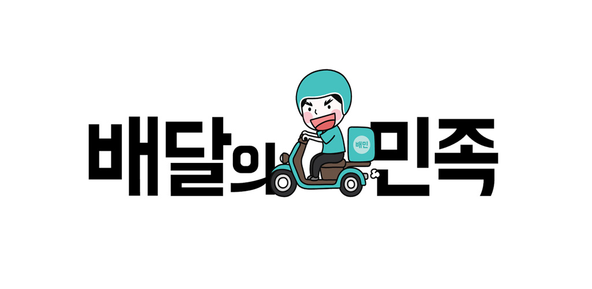
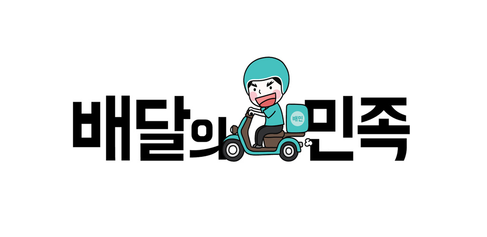

음식 배달 산업을 바꿨습니다.
주변에 배달 음식점 찾기가 편해졌고, 리뷰 덕분에 선택도 쉬워졌습니다. 이제 우리는 “배달음식 시켜 먹을까?”라는 말에 전단지 대신 당연하게 배달의민족을 켜고 있습니다.
배달의민족은
수수료가 없습니다.
많은 사람이 배달의민족을 쓰면 쓸수록 음식점 사장님들의 매출은 오르고 광고비 부담은 줄어듭니다. 전단지나 정보 책자 같은 기존 광고에서는 상상할 수 없었던 일이에요. 리뷰와 댓글로 고객과 소통하며 서비스 품질을 높일 수 있다는 점도 큰 변화입니다.배달의민족은
배달 문화 생태계까지 발전
시키고 있습니다. 자영업자 소상공인의 성장을 돕기 위한 무료 교육프로그램 ‘배민아카데미’, 안전한 오토바이 운행을 위한 ‘민트라이더’ 캠페인, 깨끗하고 믿을 수 있는 먹거리를 위한 ‘청결왕’ 캠페인을 벌여오고 있습니다.배달의민족은
배달의 미래
도 준비하고 있어요. 인공지능(AI), 자율주행 로봇 같은 새로운 기술에 적극적으로 투자해 손 하나 까닥하지 않고 말로 주문하고, 로봇이 배달해주는 세상을 앞당기고 있습니다. 
